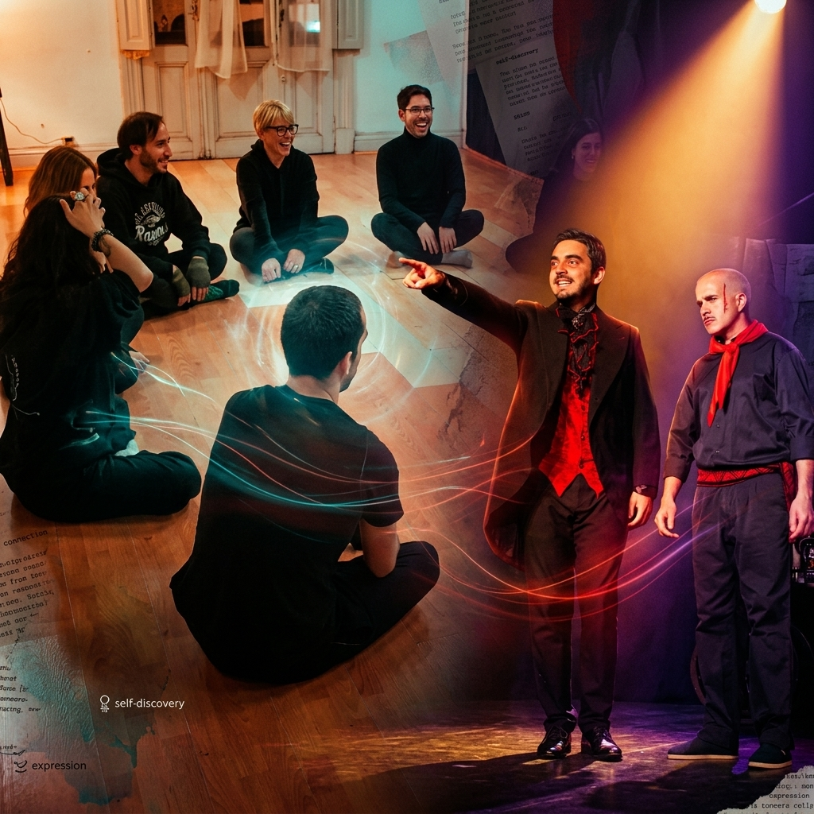
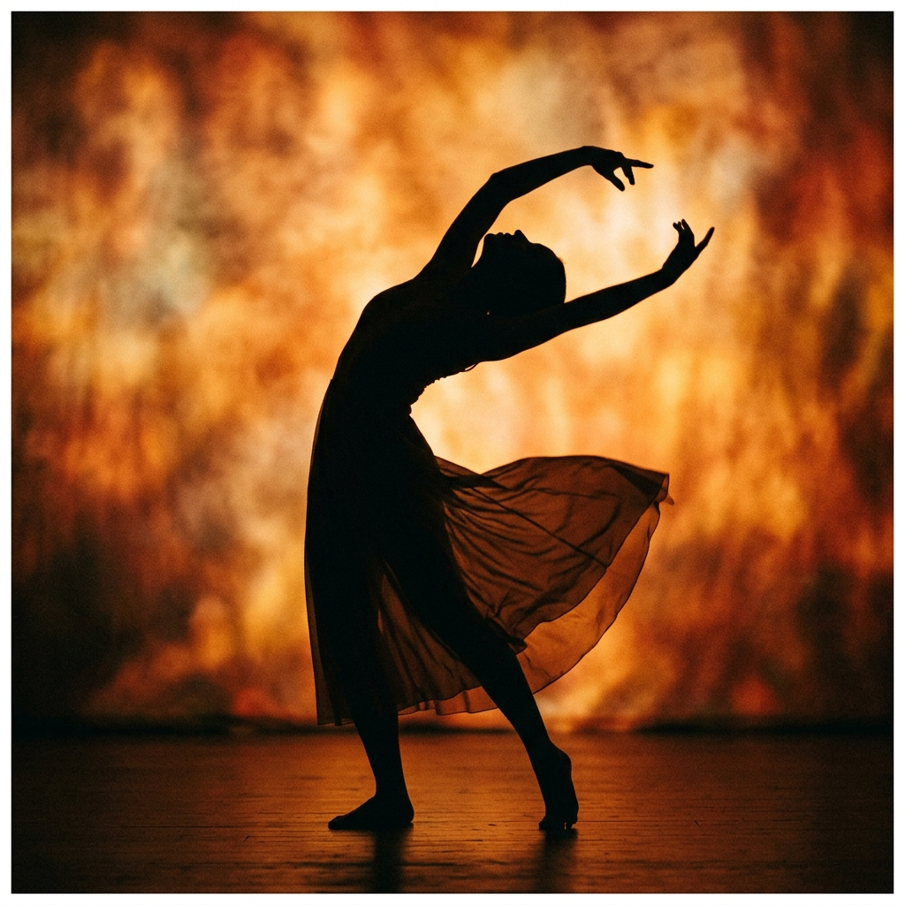
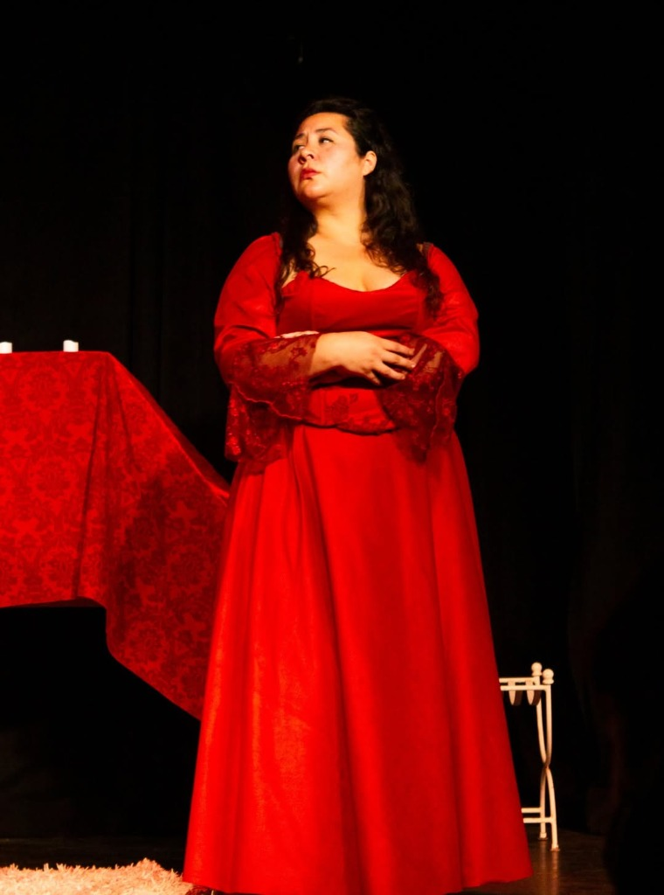
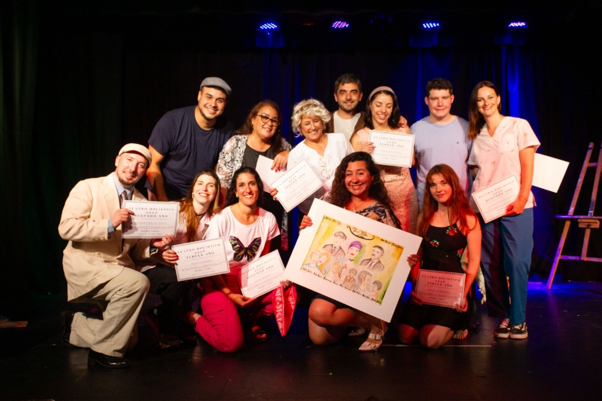
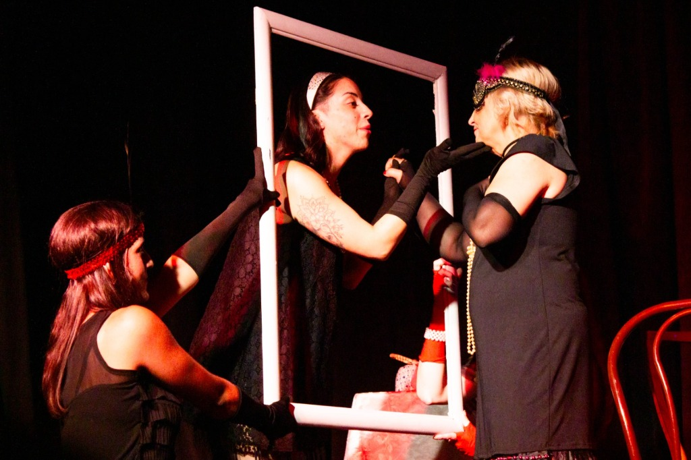
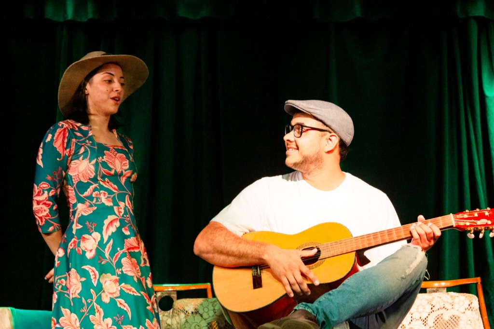
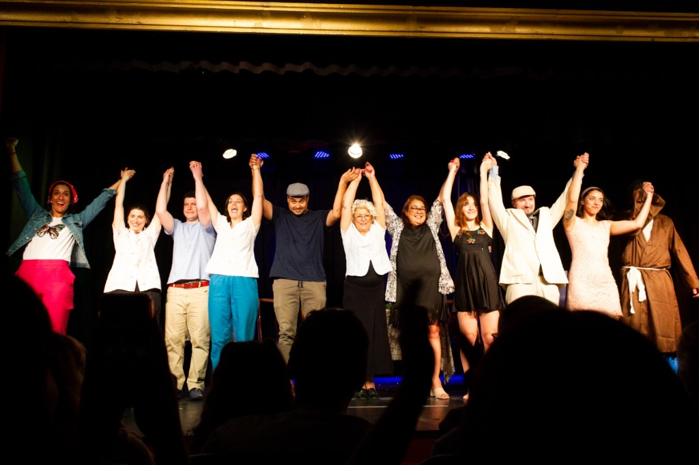
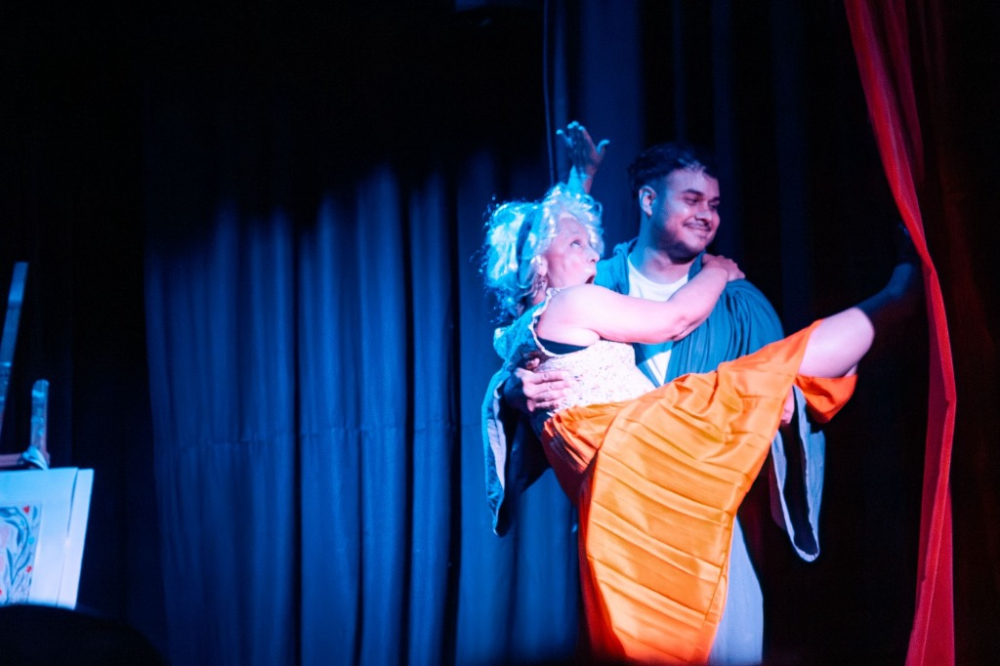

El teatro como canal de expresión del alma.
Un viaje de autoexploración, integración corporal y transmutación emocional en Teatro Estudio. Más de 20 años encendiendo la chispa creadora y la cercanía humana a través del juego escénico.

El juego escénico como puente hacia tu ser esencial
El teatro holístico es una experiencia que utiliza herramientas teatrales, corporales y expresivas para el autoconocimiento y el crecimiento personal. Integra cuerpo, mente, emoción y energía, ayudando a liberar tensiones, superar bloqueos y potenciar la autenticidad sin el objetivo principal de formar actores.
Autodescubrimiento
Permite reconocer y soltar "máscaras" o personajes cotidianos que ya no representan a la persona, conectando con su verdadero sentir.
Enfoque Integral
Trabaja la voz, el movimiento espontáneo, la respiración y la presencia plena en el aquí y ahora para integrar mente y cuerpo.
Liberación
Ayuda a superar el miedo escénico, la vergüenza y los bloqueos emocionales mediante el juego libre en un contenedor seguro.

El escenario como espejo del alma
A diferencia del teatro convencional orientado al aplauso y a la técnica, nuestro enfoque holístico utiliza el arte como un canalizador. El escenario se transforma en un espacio sagrado donde podés ensayar nuevas formas de ser, sentir y vibrar, para luego llevar esa autenticidad a tu vida cotidiana.
"El teatro es el arte de recordar quiénes somos detrás de las máscaras."
Mi camino
Mi camino en el teatro comenzó hace más de veinte años y, desde entonces, sigue siendo mi lugar de aprendizaje y crecimiento.
En este recorrido comprendí que el teatro es mucho más que aprender un texto. Es un espacio de encuentro con uno mismo, de juego, de creación y de descubrimiento. Cada personaje nos invita a descubrir algo nuevo de nosotros mismos y, cuanto más lo habitamos, más verdad encontramos.
Con el tiempo entendí que esa transformación también trasciende el escenario. Así nació Teatro Holístico, una propuesta que integra mi recorrido artístico con herramientas de desarrollo personal para acompañar tanto al actor como a la persona. Porque creo que, cuando nos animamos a expresarnos con verdad, algo en nosotros también comienza a transformarse.
Tuve la fortuna de formarme con maestros que marcaron mi recorrido artístico, entre ellos Ana María Nazar, Augusto Fernandes, Rubén Viani, Claudio Ferrari y Martín Benítez Tosar. Continué mi formación en Artes Escénicas en CIC, en La Odisea y en UADE, enriqueciendo ese camino con la participación en la Masterclass Internacional de Al Pacino en el Teatro Colón.
En este camino también encontré un espacio para la escritura y la dirección teatral. Así nacieron mis obras ¿Y si jamás lo olvido?, El Libro Mágico, Pura Vida y Apagón. Además, tuve el privilegio de dirigir El caballero de la armadura oxidada, de Robert Fisher; Mujercitas, de Louisa May Alcott; La casa de Bernarda Alba, de Federico García Lorca; y La Malasangre, de Griselda Gambaro.
El teatro transformó mi vida. Hoy mi mayor deseo es que cada persona que llegue a mis clases pueda descubrir, a través de él, su propia verdad.

Teatro Estudio
Av. Independencia 2233, Mar del Plata
Espacios de expresión por edades
Las clases con enfoque holístico dictadas por la actriz y directora Mer Canda se desarrollan en la sala Teatro Estudio. No se requiere ninguna experiencia previa.
Teatro Holístico para Adultos
Un espacio para desarmar los personajes cotidianos, liberar tensiones corporales y jugar libremente. Fusiona herramientas teatrales tradicionales con el autoconocimiento y la integración emocional.
- Lugar: Teatro Estudio (Av. Independencia 2233)
- Enfoque: Presencia, desinhibición, voz y transmutación de bloqueos.
- Inscripción: Abierta para personas de todas las edades.
Teatro & Expresión Creativa
Pensado especialmente para jóvenes que buscan un espacio donde expresarse sin presiones. Fomenta la confianza, la comunicación grupal, el juego escénico y la aceptación de su propia identidad.
- Lugar: Teatro Estudio (Av. Independencia 2233)
- Enfoque: Autoestima, integración de grupo y creatividad espontánea.
- Edades: Recomendado de 13 a 17 años.
Teatro Lúdico & Expresión Corporal
Un taller de juego dramático donde los niños exploran su imaginación, el movimiento consciente y el disfrute en ronda. Potencia la empatía, el juego colectivo y la confianza personal.
- Lugar: Teatro Estudio (Av. Independencia 2233)
- Enfoque: Juego teatral libre, expresión física y vocal, diversión.
- Edades: Recomendado de 6 a 12 años.
El latir del escenario
Imágenes reales de nuestras puestas en escena, muestras anuales y el compartir en Teatro Estudio.





El escenario en escena
Disfrutá de algunos fragmentos y funciones completas de nuestras obras presentadas en las salas de Mar del Plata.
La Malasangre
Obra de Griselda Gambaro, dirigida por Mer Canda. Presentada en la Sala Melany de Mar del Plata.
¿Y si jamás lo olvido?
Obra original escrita y dirigida por Mer Canda. Registro en Sala Melany, Mar del Plata.
El caballero de la armadura oxidada
Adaptación teatral de la novela de Robert Fisher, con dirección general de Mer Canda.
Sentir el llamado de la ronda
Si resuena en vos la propuesta y querés sumarte a nuestros círculos de expresión o hacerme alguna consulta personal, escribime directamente al WhatsApp de Mer. Te responderé personalmente con total cercanía.
Enviar WhatsApp a Mer (223 663-3197)